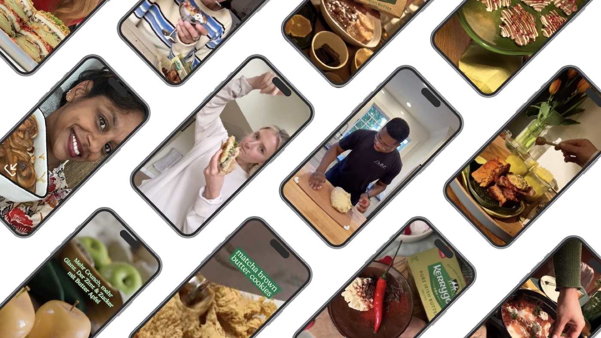
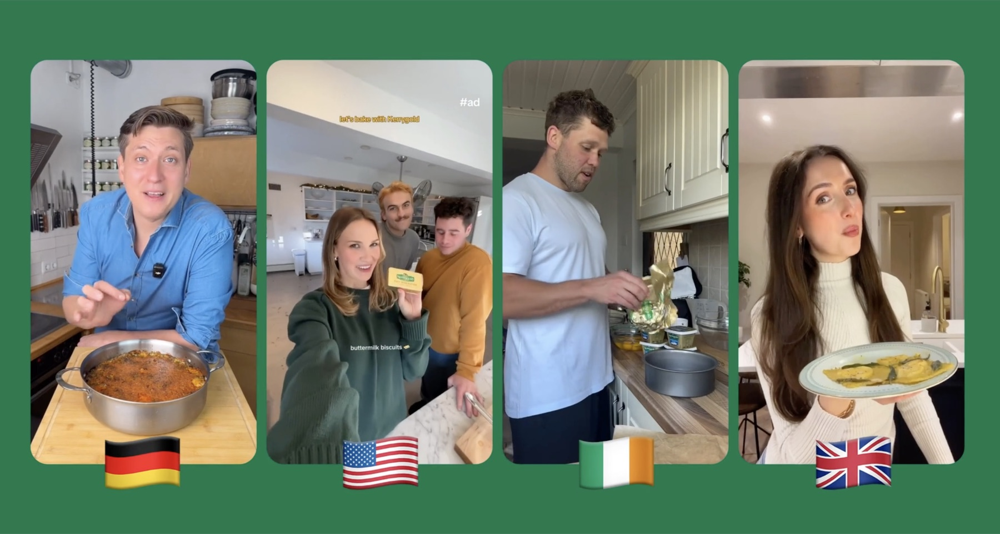
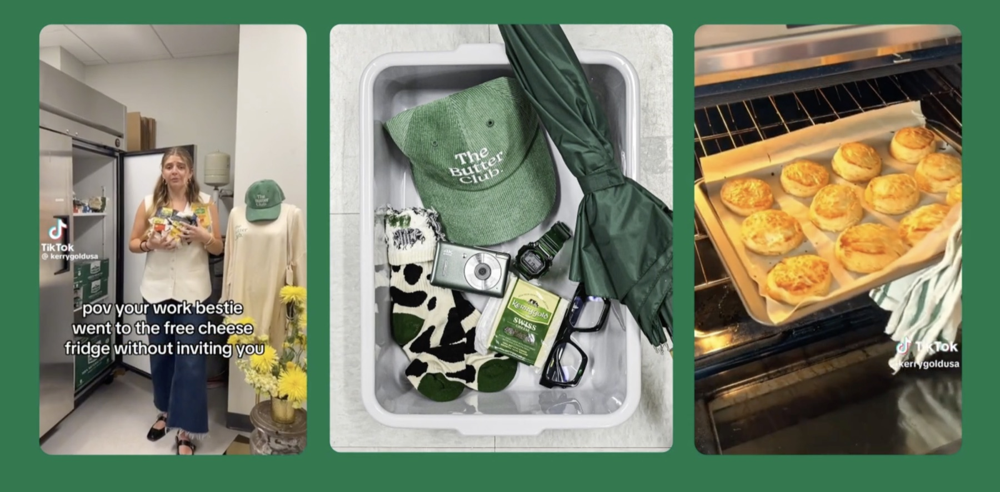
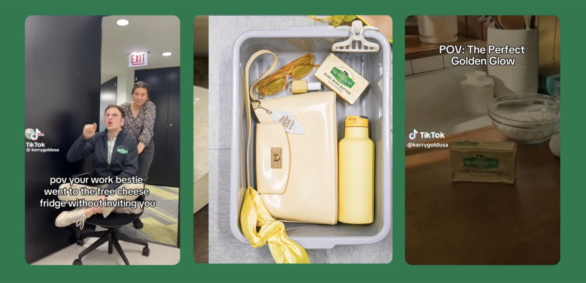

Kerrygold — From Cult to Culture
All selected work
KerrygoldFrom Cult to CultureCult brands don't earn attention by being louder, they earn it by being bolder.
I joined Ornua, the company behind Kerrygold, as their first-ever in-house digital, social and content manager, working across the UK, Ireland and developing European markets. There was no existing social function to inherit. Everything from tone of voice to content and creator strategy had to be built from the ground up.
The problem wasn't that people didn't love Kerrygold. Chefs swore by it, celebrities name-dropped it, and grass-fed butter fans talked about it like it was the world's greatest unkept secret. But that's exactly how it stayed for years: a secret. Online, Kerrygold looked like every other butter or dairy brand, images of cows frolicking in Irish meadows, glossy product shots and recipe content indistinguishable from a dozen competitors. A brand with an incredible cult status and global fandom was showing up like it had none.
Working alongside 1000Heads, our social agency partner across London, Chicago and Berlin, I helped lead a full rebuild of how Kerrygold showed up socially, with a business goal behind it that mattered: double household penetration across the UK, US, Ireland and Germany. We gave the brand an actual point of view, bolder, funnier, more willing to be the main character instead of a supporting ingredient in someone else's recipe video.
- Role
- Digital, Social & Content Manager
- Brand
- Kerrygold
- Category
- FMCG / Food & Beverage
- Location
- UK, Ireland, Germany, US
- Agency
- 1000Heads (London, Chicago, Berlin)
- Year
- 2024–2025
We built out content that turned real, relatable food and cultural moments into something people wanted to share, not just watch. And we gave the existing fans somewhere to actually belong, rather than leaving their love for the brand scattered across individual comment sections with nowhere to land.
The shift showed up in the numbers fast. Organic social reach grew sevenfold year on year. Our following across every market roughly tripled. Recipe saves rose 120%, even as we deliberately posted less recipe content, and mentions showing genuine purchase intent jumped 78%. People started DMing the brand directly asking where to buy it, or asking us to get it stocked somewhere it wasn't.
Kantar tracked unaided brand awareness among younger consumers doubling over the same period, driven by social alone.
It also showed up in ways no dashboard captures. A Kerrygold-branded coffee table went viral. People got real Kerrygold tattoos. International brands created Kerrygold-inspired designer bags. Membership of a community we built around the brand became something people actively wanted in on, not something we had to push.
This wasn't about making people love Kerrygold. It was about making that love impossible to miss. A brand like Kerrygold doesn't go from cult to culture by chasing new fans, it gets there by giving the ones it already has a reason to be loud and proud.
Unaided brand awareness among young consumers
Fold increase in organic social reach
Increase in intent to purchase



.jpg)

Recognition
Digital Impact Awards
- 🥇 Best Viral Campaign
- 🥈 Best Community Development
- 🥈 Best Use of Digital from the Food and Beverage Sector
BIMA Awards
- 🥇 Best in Consumer
- 🥉 Most Innovative Use of Social
The Drum Awards
- 🥉 Best in Social: CPG & Food and Beverage